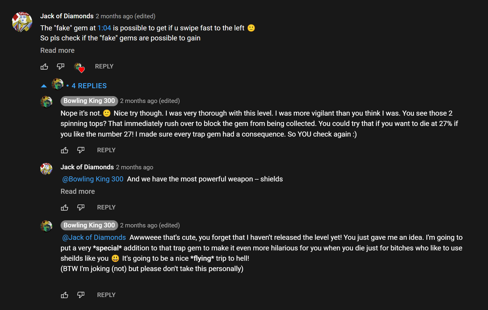
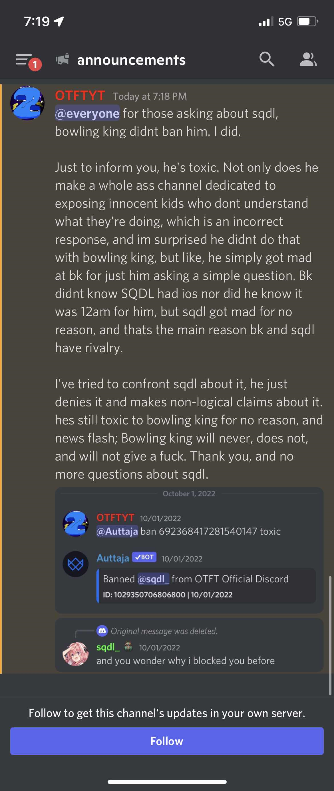
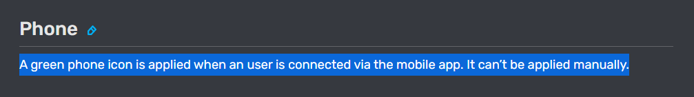
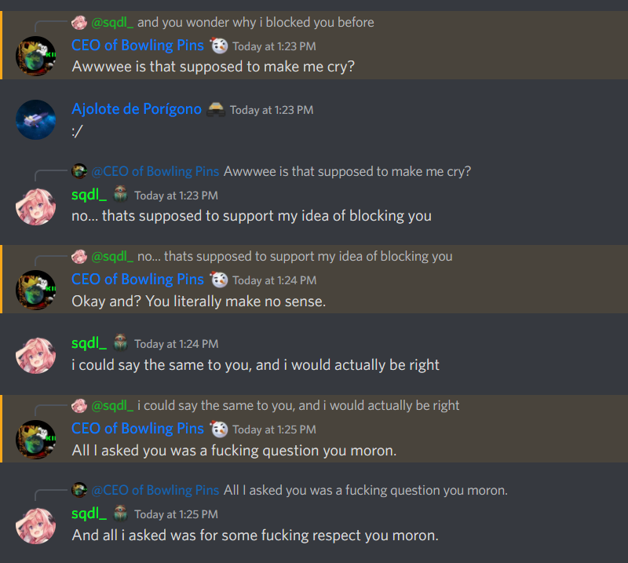

Unsubscribe from these guys
I was kept up way too late by this guy's friend (over something he could have used Google for) and got mad at his friend... guess what? He did the only reasonable thing he could think of.
Ban me from his Discord server.
(Nobody tell him I joined his Discord server just to support him)
A few days later I was messaged screenshots of my account getting banned from multiple Discord servers related to Bowling King and OTFT.
(Seriously nobody tell them that I literally do not care about their Discord servers)
This disgrace of humanity can't even handle constructive criticism, as seen in the screenshot below.

A little update here, as you can see in the screenshot below, OTFT attempts (and fails) to make correct statements about what I did. Check the screenshot below:

Oh yeah and **I** was the one who responded incorrectly...
*Reviewer's note (Quoted from Discord chat)
: SQDL has reported to me that he has never denied the statement of being a little illogical, he even admits it (indirectly) a few times in the conversation. I have looked over the screenshot I was sent and it seems to be true. SQDL will link a full resolution image of the conversation that occured before this happened.
You can click here to be linked to the image, its gonna open in a new tab. You probably need to zoom in to see the text.
About the "didnt know SQDL had ios," its kind of obvious you can't mod an apk on mobile. How do you know that I'm on mobile, you may ask? Well...

(Source: https://discord.fandom.com/wiki/User_Status#Phone)

Also if you are reading this, Bowling King 300, maybe try to use Google if your question is as simple as "how to mod an apk." Statistically, a Google search (on average) takes about 0.73 seconds, and an average Discord message response from me can take anywhere from a few seconds all the way to an hour (if im busy) so if the question is that simple, just use Google. It won't get mad at you when you keep it up until 12AM. I promise.
Here is (quoted) what I announced on my Discord server:
we all know that there are literally no kids here, my arguments were literally just the reused logic of bowling king and legit i dont believe there is a single person on earth that doesnt know that IOS has a bar at the bottom of the screen, there is a phone icon next to your discord status when you are mobile, and that the time is on the top left corner of the phone, always.
Do what you want with the following information:
- Bowling King 300 Discord ID:
415985105929109506
Unsubscribe:
OTFT and Bowling King
You are fighting a losing battle. Stop trying to manipulate people. I have evidence